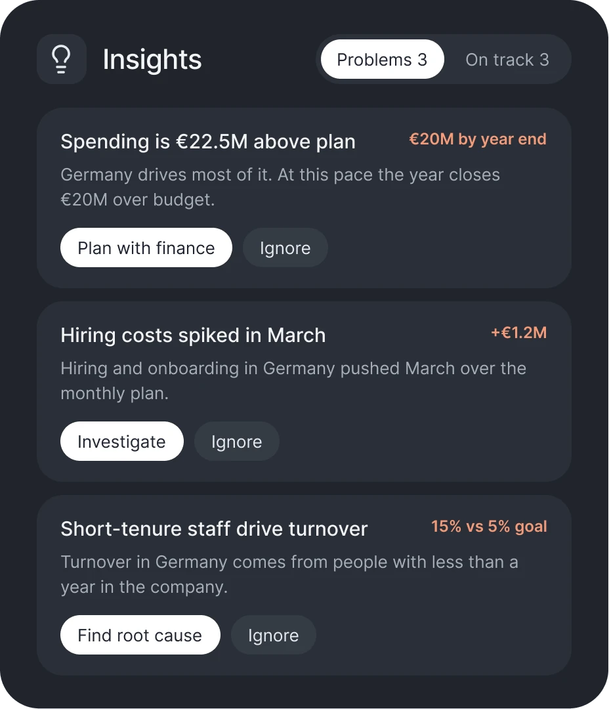
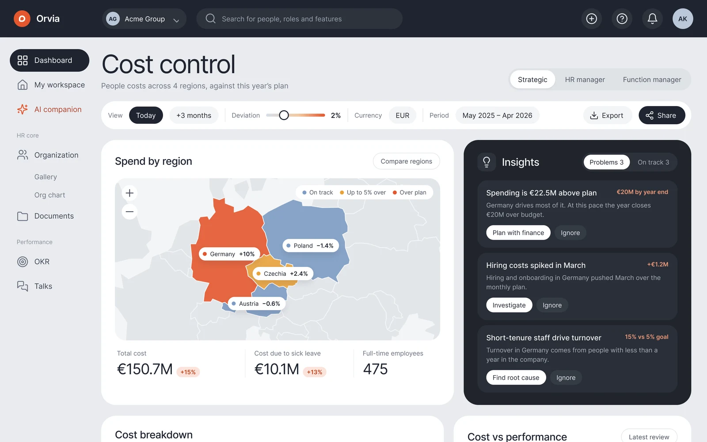

01
One “+3 months” switch instead of several forecast horizons.
Hypothesis rejected
A fast-growing European HR platform held hundreds of thousands of salary data points but wasn’t using them to stand out. We defined, tested and launched a cost-control dashboard that turns pay data into decisions for leadership.
The key question
Which product would set the platform apart, and would leaders trust it with salary decisions?
What we decided




From first workshop to a live proof of concept. In 12 weeks.
Delivered by Sensum’s founders while at a global engineering consultancy. Screens are redesigned and anonymised, and the figures in them are illustrative.